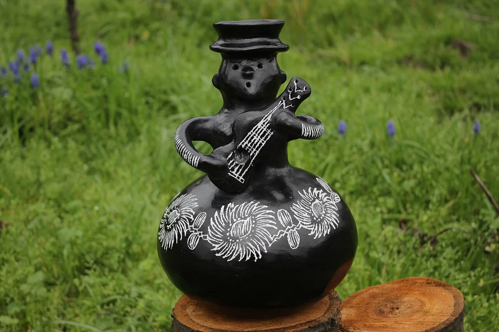

Una aguja de vitrola puede formar parte del instrumento con que una alfarera de Quinchamalí dibuja sobre la greda. No reproduce música ni convierte la pieza en un homenaje al disco: sirve para incidir una superficie todavía sin cocer. La ficha del Centro de Documentación de Bienes Patrimoniales chileno registra ese uso, y una descripción de la Fundación Artesanías de Chile explica cómo la aguja se fija a un palito para formar el pintor. A primera vista parece una anécdota sobre reciclaje ingenioso. Mirada de cerca, obliga a seguir un orden: antes de que el objeto se vea negro y blanco, alguien ha elegido una mezcla de tierras, ha construido un volumen, lo ha dejado orear, ha bruñido y preparado la superficie, ha trazado sobre ella, ha controlado fuego y humo y ha colocado material blanco en las líneas. La aguja interviene en un momento preciso de una cadena que una fotografía del resultado suele ocultar. [1][2]
El negro no es una capa uniforme de pintura que explique por sí sola la pieza. Según las descripciones técnicas consultadas, el humo tiñe el objeto después de la cocción; el blanco se aloja en incisiones abiertas antes. Cuando el observador reduce todo a «cerámica negra con dibujos blancos», convierte operaciones distintas en una sola apariencia. La diferencia importa porque ahí está el diseño: no en imponer un estilo al final, sino en decidir qué permite la materia en cada fase y qué consecuencias tendrá una decisión en la siguiente. El grosor de una pared influye en la cocción. La curvatura decide cómo se lee el dibujo. La profundidad de un trazo afecta la presencia del colo blanco. Una imagen puede mostrar esos resultados; no puede reconstruir sola todo el proceso. [1][2]
La primera fotografía de esta lectura reúne figuras de Quinchamalí y Santa Cruz de Cuca. Su ficha identifica al fotógrafo, pero no a la autora de cada objeto. Ese vacío es más que un problema de pie de foto. La circulación visual de la artesanía acostumbra nombrar el lugar y el tipo, mientras el trabajo individual queda fuera del encuadre documental. Podemos comparar siluetas y motivos sin adjudicarles una biografía desconocida. También debemos resistir la tentación de usar la colección como prueba de que todas las alfareras repiten un mismo modelo. El nombre de una localidad sitúa una práctica compartida; no sustituye la firma, la variación ni las condiciones particulares de una pieza. [8]


Una forma se construye antes de adornarse
La Fundación Artesanías de Chile distingue dos maneras de levantar objetos que luego reconocemos como parte de un mismo oficio. Para formas cerradas, entre ellas algunas figuras de animales y guitarreras, describe el trabajo de tapas: porciones aplastadas y curvadas que se unen para producir un cuerpo hueco. Para ollas y cántaros abiertos, describe el canco: una bola húmeda se ahueca y las paredes se desarrollan con cordones de greda. No se trata de una lista de nombres pintorescos. Cada procedimiento resuelve un problema espacial diferente: cómo cerrar un volumen sin perder su forma, o cómo hacer crecer una cavidad capaz de contener. La decoración llega a una estructura que ya ha tomado decisiones de peso, espesor, abertura y apoyo. [2]
La guitarrera de la segunda fotografía hace visible esa relación. El cuerpo no es un lienzo plano al que se haya agregado una figura. Su volumen representa una persona con instrumento; las líneas blancas ordenan zonas de atención sobre esa forma. El sombrero, los brazos y la guitarra permiten reconocer la escena, mientras las incisiones obligan a acercarse para leer detalles. Desde otro ángulo, parte de ese dibujo se pierde y otra parte aparece. Publicar una vista frontal facilita la identificación, pero una pieza modelada se entiende también al girarla: qué sostiene el objeto, dónde se juntan sus partes, cómo pasa el dibujo de un costado al otro. No conocemos la autora de la guitarrera fotografiada en 2011 y no podemos atribuirle decisiones específicas de intención. La observación formal se limita a lo que la imagen deja ver. [9]


La versión de dieciséis etapas publicada por el Servicio Nacional del Patrimonio Cultural de Chile empieza lejos de la vitrina. La greda se extrae, seca, muele y reposa; se mezcla con otras tierras, arena y agua; se pisa o amasa y se limpia de impurezas antes de separar las porciones. El texto institucional explica que las proporciones no dependen siempre de instrumentos de medición: la consistencia se reconoce mediante experiencia transmitida. Esa afirmación tampoco significa que el proceso sea impreciso. Significa que su precisión se ejerce al tocar, comparar y corregir una materia cambiante, no necesariamente al copiar una receta fija. Publicar una proporción de ingredientes como si fuera universal borraría la decisión que cada alfarera toma frente a la humedad y el estado de lo que tiene entre manos. [3]
Hay una economía del tiempo en ese comienzo. La pieza debe reposar y orearse para que una intervención posterior no deshaga la anterior. La velocidad del trabajo está condicionada por la materia y el clima. Desde una mesa de diseño puede parecer eficiente comprimir pasos; dentro de este oficio, saltarse uno puede modificar la estabilidad de la forma o la respuesta de la superficie. El Servicio enumera el raspado, el alisado con cuero, el bruñido húmedo y el bruñido seco como momentos diferenciados. Al presentarlos uno tras otro no pretendemos cronometrar una práctica real ni afirmar que todas las personas hacen exactamente lo mismo. La secuencia sirve para leer la pieza como acumulación de operaciones, y para recordar que su precio final debería conversar con un trabajo que no aparece entero en la imagen comercial. [2][3]
El bruñido merece detenerse. Una piedra y el movimiento de la mano modifican la superficie antes de que el fuego fije el resultado. El brillo que atrae al espectador no procede de una sola operación final. La Fundación describe una aplicación de colo rojo, otro bruñido y un lustrado posterior antes del esgrafiado. El Servicio registra variantes de materiales grasos empleados para lustrar. No hay que convertir esas fuentes en una receta intercambiable: documentan procedimientos y vocabularios que pueden variar entre talleres y momentos. Para el análisis visual basta una consecuencia clara: la luz que una pieza devuelve forma parte de su diseño tanto como la silueta. Una zona lisa puede dar aire a un motivo inciso; una curva brillante modifica la percepción de profundidad; el blanco no tiene el mismo peso sobre todas las superficies. [2][3]
Entonces llega el pintor. La Fundación lo describe como una aguja de vitrola o de coser unida a un pequeño mango de madera. El Servicio menciona también clavos y agujas sujetas a palos o lápices. El punto no es elegir una versión como la única auténtica. El instrumento importa porque combina dureza y control: debe abrir un trazo sin destruir la pared de greda. Un utensilio procedente de otra tecnología encuentra una tarea nueva en el taller. Esa transferencia no vuelve moderna a la cerámica de repente; revela que los oficios nunca han sido sistemas cerrados a las herramientas disponibles. La tradición está en saber emplearlas con criterio, no en conservar intacta una supuesta lista original. [1][2][3]
La Biblioteca Nacional de Chile identifica hojas, flores y geometrías entre las decoraciones características. En una descripción reciente de su propio trabajo, la alfarera Mónica Venegas menciona flores de cerezo, hojas de higuera y espigas de trigo. Es útil leer esos motivos como opciones situadas y no como un alfabeto obligatorio. Una espiga puede dialogar con la curvatura de una vasija; una franja puede separar partes del cuerpo; un área sin dibujo puede darle escala al conjunto. De una fotografía aislada no se deduce por qué una alfarera eligió un motivo. Lo que sí podemos examinar es cómo se distribuyen las líneas y qué relación establecen con volumen, brillo y vacío. [4][5]
La cocción transforma esa suma de decisiones. Las fuentes chilenas describen piezas calentadas hasta el rojo y expuestas después a humo procedente de materiales orgánicos; una vez frías, reciben colo blanco en los surcos. El artículo del Servicio lista combustibles y variantes para el teñido, mientras la Fundación presenta un procedimiento concreto. Esta lectura no puede certificar la temperatura, duración ni combustible de las obras fotografiadas. Sí permite corregir una confusión frecuente: el blanco no se pinta como una ilustración sobre un fondo negro ya terminado. Su lugar fue previsto cuando se abrió cada línea. El resultado visual depende del orden de las acciones. Esa dependencia explica por qué un pequeño error puede volverse irreversible y por qué una descripción de «decoración» resulta insuficiente. [2][3]
La pieza también viaja
Mirar el objeto únicamente en la mesa de taller sería otra reducción. La Fundación recuerda la circulación de loza doméstica por trueque y la ampliación de mercados con el ferrocarril a comienzos del siglo XX. Entre cántaros y ollas aparecen figuras que responden a otros usos: chanchos, gallinas, jinetes y guitarreras. La distinción entre utilitario y decorativo ayuda a describir destinos, pero no ordena las piezas por importancia cultural. Un recipiente usado a diario enfrenta problemas de agarre, limpieza y resistencia. Una figura puede trasladar a otra escala una escena del trabajo, la música o la vida campesina. Ambas circulan en redes de intercambio y ambas exigen decisiones de fabricación. [2]
La Biblioteca Nacional registra esas familias de objetos y señala el siglo XX como momento de venta de figuras en mercados. Su síntesis histórica debe leerse como punto de partida, no como explicación definitiva de los orígenes o de todas las rutas comerciales. Atribuir una genealogía única a una práctica transmitida por generaciones, con relaciones entre comunidades y cambios de mercado, exigiría más trabajo de archivo y de campo del que hacemos aquí. Este ensayo prefiere una pregunta que puede verificarse mejor: ¿qué se gana y qué se pierde cuando una pieza hecha para contener, acompañar una mesa o representar a una cantora se presenta en una página de venta solo como «cerámica negra»? [4]
En 2017, instituciones chilenas informaron sobre un sello de origen, una imagen gráfica y embalajes especiales para Quinchamalí. Mónica Venegas defendió entonces la mejora de presentación: un objeto que antes se envolvía con materiales precarios podía llegar al comprador de un modo más acorde con su trabajo. Su argumento impide despachar el embalaje como una intervención externa sin valor. Proteger una pieza frágil, identificar procedencia y explicar su elaboración son tareas de diseño reales. A la vez, un sello no informa por sí solo quién hizo la obra, cuánto tiempo dedicó ni qué recibió por la venta. La calidad de la marca debería juzgarse también por la información y la relación económica que ayuda a sostener, no únicamente por su coherencia gráfica. [6]
El mismo comunicado reconocía que muchas personas compran sin conocer etapas de producción, tiempos y costos. Ahí el diseño editorial puede hacer algo más útil que repetir un repertorio de motivos. Un buen pie de foto identifica autoría cuando se conoce; una ficha de producto distingue material, técnica, medidas, fecha y lugar; un embalaje explica cuidados y evita atribuir a una sola comunidad una obra individual cuya autora sí puede nombrarse. Son propuestas de lectura y comercialización, no prácticas que hayamos constatado en todos los puntos de venta. Tampoco sabemos si la intervención de 2017 mejoró ingresos de forma sostenida: harían falta cifras de compra a las alfareras, precios finales, volumen de ventas y testimonios posteriores. El reconocimiento visual y la viabilidad económica no son sinónimos. [6]
La circulación digital agranda este problema. Una imagen compartida fuera de su contexto puede llevar el nombre de Quinchamalí por muchos lugares y perder en el camino el de la persona que modeló la pieza. Las dos fotografías aquí reproducidas tienen autoría fotográfica y licencia claras, pero no identifican a las alfareras de las obras representadas. No rellenamos ese dato con una suposición. Esta omisión limita cualquier argumento sobre trayectorias individuales. Para una investigación posterior convendría trabajar con una pieza cuya autora acepte ser nombrada y contar la historia de su fabricación y venta. La fotografía debería mostrar también reverso, base y detalle de incisiones, no solo la vista que convierte el objeto en icono. [8][9]
El caso de Venegas demuestra por qué ese nombre propio cambia la lectura. En octubre de 2026, el Servicio Nacional del Patrimonio Cultural informó que recibió un Sello de Excelencia por Relicario de mis Recuerdos, un contenedor de greda negra con tapa, tres patas y detalles esgrafiados. La alfarera explicó que la obra respondía a pérdidas familiares y recuperaba la idea de guardar cosas queridas. No es la guitarrera de nuestra fotografía, ni debemos presentar una imagen de otra pieza como si ilustrara ese trabajo. La noticia permite, en cambio, observar una decisión que una etiqueta genérica no transmite: el contenedor mantiene una función reconocible y se convierte en forma para una memoria particular. La tradición ofrece medios; la autora decide qué hacer con ellos. [5]
La misma entrevista de 2026 sitúa el oficio dentro de un trabajo colectivo. Venegas cuenta que participó con otras seis artesanas en un mural de 207 piezas dedicado a Violeta Parra en San Carlos. Ese ejemplo no autoriza a afirmar que el mural representa a todas las alfareras ni que responde a la misma lógica que cada obra doméstica. Sí muestra una escala distinta de colaboración: piezas separadas forman una imagen pública y demandan coordinación. El oficio aparece como capacidad de hacer recipientes, figuras y también un conjunto que ocupa un muro. Pensar en diseño desde Quinchamalí incluye esa amplitud, en vez de fijar a la alfarera en el papel de repetidora de un catálogo heredado. [5]
Lo que una distinción no resuelve
En 2022, la alfarería de Quinchamalí y Santa Cruz de Cuca ingresó en la Lista del Patrimonio Cultural Inmaterial que requiere medidas urgentes de salvaguardia. El reconocimiento internacional no equivale a una declaración de que el oficio quedó protegido. La propia categoría señala riesgos para su continuidad. La información de UNESCO menciona problemas como acceso a materias primas, transmisión y sostenibilidad económica. Un objeto puede ocupar una vitrina mientras se vuelven difíciles las condiciones necesarias para hacer el siguiente. Una fotografía del resultado no muestra si el terreno de extracción es accesible, si hay tiempo para enseñar o si la venta paga el esfuerzo. [7]
UNESCO identifica además un riesgo que toca directamente a quienes diseñan, editan y venden: la apropiación del conocimiento alfarero por artistas o diseñadores que obtienen beneficios sin compartirlos con las practicantes. No basta con trasladar motivos a otra superficie y añadir «inspirado en Quinchamalí» a un crédito. Antes de una colaboración habría que acordar quién decide el uso de las formas, cómo se nombra a quienes aportan conocimiento y cómo se distribuyen los ingresos. Esa pauta es una consecuencia editorial de la advertencia de UNESCO, no una acusación contra una marca o proyecto concreto. La circulación cultural puede ampliar públicos; también puede separar la imagen reconocible del oficio que le dio forma. [7]
La Fundación señala que parte de las vetas de material están hoy en predios privados y tienen acceso limitado. Esa frase concreta modifica la lectura del negro y del blanco. No son colores disponibles en una paleta digital que una marca pueda seleccionar libremente: dependen de tierras, desplazamientos, permisos y conocimiento de dónde buscar. No sabemos cuántas alfareras han perdido acceso ni qué soluciones se aplican en cada lugar; afirmar una crisis homogénea sería excesivo. Pero tampoco sería honesto describir la «identidad visual» de la cerámica sin nombrar la disponibilidad material que la sostiene. Si cambia el acceso, cambian las posibilidades técnicas antes de que aparezca cualquier debate sobre tendencias formales. [2]
Hay además una condición corporal. En la entrevista publicada en 2026, Venegas explica que recoger materiales, cocer y teñir piezas exige esfuerzo y exposición al humo; describe efectos sobre la salud de alfareras. Su testimonio es una alerta de una trabajadora con décadas de práctica, no un estudio clínico que permita calcular prevalencias o atribuir diagnósticos a todas. Debería abrir preguntas sobre ventilación, protección, jornada y atención sanitaria sin convertir el sufrimiento en una cualidad romántica de la pieza. La expresión «hecho a mano» rara vez dice qué partes del cuerpo soportan la producción. Cuando el relato comercial se limita a celebrar la autenticidad, ese trabajo puede quedar tan invisible como la autora en una foto sin crédito. [5]
La transmisión plantea otra dificultad. El Servicio describe un conocimiento que circula de generación en generación, especialmente entre mujeres. La noticia de Venegas cuenta una trayectoria más específica: llegó a Ñuble desde Santiago y aprendió de familiares de su esposo. Esta biografía no contradice la transmisión comunitaria; demuestra que una comunidad se sostiene también al enseñar a quien se incorpora. Hablar de «ancestralidad» como si ninguna persona nueva pudiera aprender el oficio lo congelaría. No disponemos de datos actuales sobre número de aprendices, tiempo de formación o condiciones de relevo. Cualquier programa de continuidad debería comenzar por escuchar cómo enseñan y cómo desean trabajar quienes practican hoy, antes de diseñarles un formato de promoción. [3][5]
También conviene examinar la palabra innovación. En premios y planes comerciales puede designar una pieza nueva, un uso inesperado, otro embalaje o una manera distinta de vender. Son intervenciones de alcances muy diferentes. El relicario de Venegas cambia el sentido de una forma sin abandonar sus operaciones materiales. El pintor construido con una aguja reutilizada muestra una adaptación de herramienta. El embalaje de 2017 actúa después de la fabricación. Ninguna de esas decisiones, por sí sola, garantiza acceso a tierras, condiciones saludables o ingresos justos. Preguntar qué problema resuelve cada innovación impide confundir novedad visible con mejora efectiva. Esta es una lectura editorial de fuentes heterogéneas, no una evaluación de impacto de los programas citados. [2][5][6]
La distinción entre preservar y fijar es igualmente importante. Un museo puede documentar una forma de guitarrera, registrar una técnica y conservar una pieza histórica. Es trabajo valioso. Si el registro se convierte en norma de cómo deben producir todas las artesanas futuras, la colección deja de describir y empieza a mandar. La continuidad de un oficio necesita memoria de procedimientos y espacio para tomar decisiones: elegir un motivo, ajustar una forma, experimentar con un objeto distinto, rechazar un encargo que pague mal. El patrimonio no vive solo en lo reconocible; vive en personas capaces de juzgar cuándo una variación tiene sentido. Esa conclusión no se deduce de una ficha museística aislada. Resulta de poner las fichas junto a las palabras de una alfarera que sigue trabajando. [1][5]
Volvamos a la aguja. Su presencia podría invitar a una metáfora fácil: una tecnología vieja que encuentra otra vida. Eso sería cierto a medias y desplazaría lo decisivo. La aguja no sabe qué línea abrir, con qué fuerza ni en qué momento detenerse. Tampoco obtiene la tierra, calcula el secado, controla el fuego, negocia un precio o enseña a otra persona. La herramienta concentra una posibilidad; la alfarera convierte esa posibilidad en una obra. Una pieza de Quinchamalí permite ver cómo un diseño aparece en la relación entre materia, secuencia, mano, mercado y territorio. Su apariencia negra y blanca merece atención. Las condiciones que hacen posible esa apariencia merecen tanta o más. [1][2][5]
Fuentes.
- Salazar Maestri, Tania, y Lorena Cordero Valdés. Centros de Producción Artesanal, Centro de Documentación de Bienes Patrimoniales, 2016, p. 32.
- Fundación Artesanías de Chile. «Alfarería de Quinchamalí», descripción de materiales, técnicas y circulación.
- Subdirección Nacional de Patrimonio Cultural Inmaterial de Chile. «Quinchamalí: los 16 pasos para la artesanía negra», 14.09.2018. La numeración de la página repite «14»; el ensayo no presupone una cuenta exacta de acciones universales.
- Biblioteca Nacional de Chile, Memoria Chilena. «Quinchamalí».
- Subdirección Nacional de Patrimonio Cultural Inmaterial de Chile. «Alfarera de Quinchamalí gana Sello de Excelencia a la Artesanía 2026», 23.10.2026; entrevista a Mónica Venegas.
- Subdirección Nacional de Patrimonio Cultural Inmaterial de Chile. «Quinchamalí ya cuenta con Sello de Origen, Imagen y Embalajes exclusivos», 12.11.2017.
- UNESCO, Patrimonio Cultural Inmaterial. «La alfarería de Quinchamalí y Santa Cruz de Cuca», expediente de inscripción en la Lista de Salvaguardia Urgente, 2022.
- Feriquelme. «Alfareria Quinchamali», fotografía, 28.05.2021, Wikimedia Commons, CC BY-SA 4.0. La ficha no identifica la autoría de cada objeto.
- Panchorioseco. «La Guitarrera», fotografía, 18.06.2011, Wikimedia Commons, CC BY-SA 4.0. La ficha no identifica a la alfarera.
Ensayo documental: no hubo visita al taller, entrevista propia, medición de procesos, auditoría de precios ni examen físico de las obras fotografiadas. Las interpretaciones visuales se limitan a las imágenes disponibles.
Fuentes consultadas el 19.11.2026. Análisis e interpretación: RUMMOR. Edición privada para revisión.